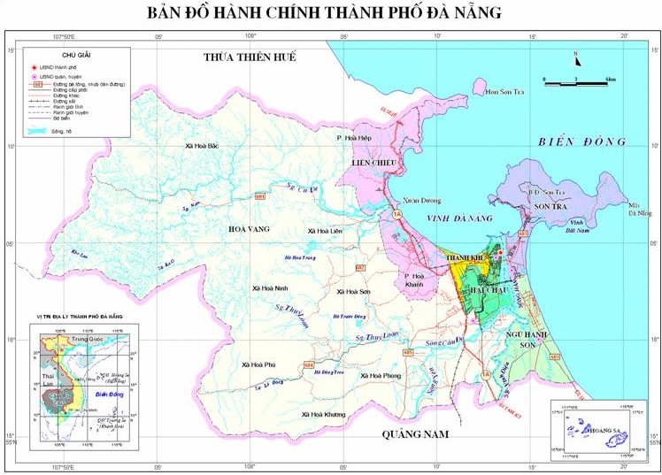

Nằm ở vùng Nam Trung Bộ của Việt Nam, Đà Nẵng có cả núi, đồng bằng và biển. Các điểm tham quan du lịch nổi tiếng khi du lịch Đà Nẵng bao gồm khu du lịch Bà Nà, bãi biển Mỹ Khê,.... Đà Nẵng còn có nhiều thắng cảnh mê hồn như đèo Hải Vân, rừng nguyên sinh ở bán đảo Sơn Trà và Ngũ Hành Sơn. Đặc biệt, Đà Nẵng được bao quanh bởi 3 di sản văn hóa thế giới là Huế, Hội An và Mỹ Sơn, và xa hơn chút nữa là Vườn Quốc Gia Phong Nha – Kẻ Bàng. Hàng năm Đà Nẵng tổ chức Lễ hội pháo hoa thu hút rất nhiều du khách muôn phương đến tham dự. Đà Nẵng có dịch vụ an ninh rất tốt, bạn hoàn toàn yên tâm khi du lịch tại đây.
Bất cứ phương tiện nào cũng có thể đưa bạn đến được với Đà Nẵng. Bạn có thể đi máy bay, xe lửa, xe khác, xe máy,.... để đến với thành phố xinh đẹp này.
Thời tiết có 2 mùa rõ rệt: mùa mưa từ tháng 8 đến tháng 12 và mùa khô từ tháng 1 đến tháng 7. Để tránh ảnh hưởng của mưa bão thì thời điểm du dịch Đà Nẵng thích hợp dành cho bạn từ tháng 2 đến tháng 8 hằng năm. Tuy nhiên nếu muốn du lịch tiết kiệm thì du khách nên đi vào khoảng tháng 1 đến tháng 4 bởi thời điểm này không khí Đà Nẵng khá mát mẻ, không có bão và nhất là giá dịch vụ mềm hơn so với tầm tháng 6 đến tháng 8.
Đà Nẵng có rất nhiều những danh lam thắng cảnh, những khu vui chơi giải trí, những bãi biển xinh đẹp và những khu di tích. Tất cả dành đều dành cho bạn.
Bà Nà Hills được biết đến là một trong những địa điểm nổi tiếng bậc nhất tại Việt Nam mà bất kỳ du khách nào cũng không thể bỏ qua. Nơi này được ví von như chốn "tiên cảnh", như một "châu Âu" thu nhỏ trong lòng thành phố với những công trình kiến trúc cổ đẹp ma mị, những trò chơi giải trí cực kỳ hấp dẫn hay cả một vườn hoa thơm ngát ngào ngạt chờ đón du khách đến chụp hình. Tất cả đã tạo nên một Bà Nà Hills cực kỳ độc đáo khiến cho bất kỳ du khách nào đã đến thì đều không nỡ bước chân đi....
Đà Nẵng nơi được mênh danh là thành phố của những cây cầu, cây cầu không chỉ là biểu tượng riêng của thành phố mà còn là niềm tự hòa của người dân Đà Thành. Với những cây cầu như cầu quay, cầu Rồng vươn mình ra biển khơi, cầu dây võng Thuận Phước… đều bắc qua sông Hàn tạo cảnh quan tuyệt đẹp cho du lịch Đà Nẵng. Đây cũng là một chuyến du ngoạm trên sông Hàn không thể bỏ lỡ khi bạn đặt chân đến Đà Nẵng...

Nằm cách trung tâm thành phố 8 km, bán đảo Sơn Trà là khu rừng nguyên sinh có khí hậu mát mẻ quanh năm. Với cảnh quan thiên nhiên tuyệt đẹp và những điểm đến hứa hẹn những điều bất ngờ và thú vị, bán đảo Sơn Trà là cái tên được lọt vào list những điểm đến cần đặt chân tới!
Là 1 trong những điểm đến không thể bỏ qua khi đến Đà Nẵng, bãi biển Mỹ Khê từng được tạp chí Forbes nhận định là 1 trong 6 bãi biển đẹp nhất hành tinh. Bạn đã biết gì về biển Mỹ Khê chưa? Bạn sẽ khám phá Mỹ Khê bằng kinh nghiệm du lịch những vùng biển khác? Bạn biết hãng taxi giá rẻ ở Đà Nẵng chưa? Để chuyến du lịch trọn vẹn, hãy cùng chúng tôi tìm hiểu về Mỹ Khê nhé!